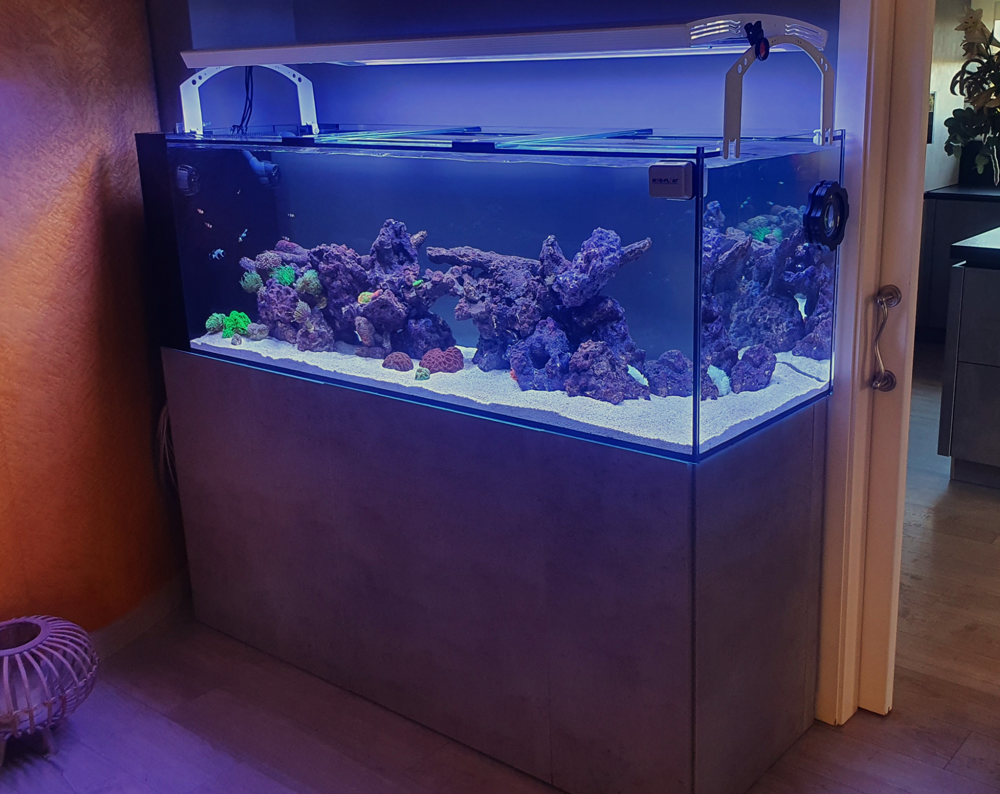
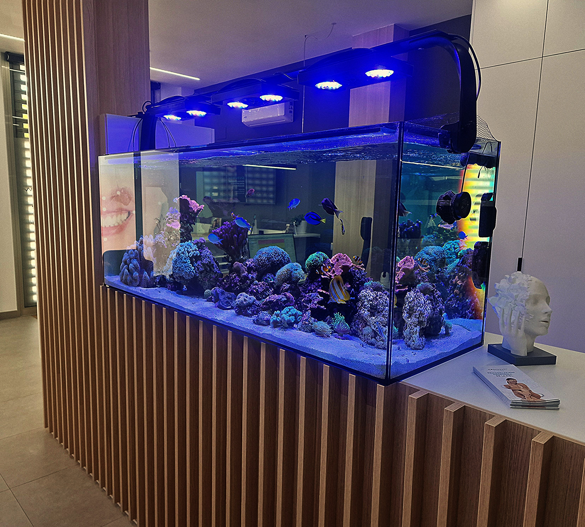
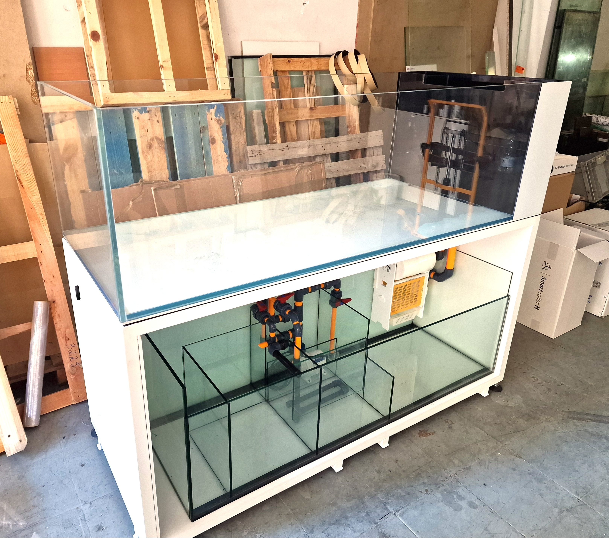

Coraline Acuarios surge de la pasión por la acuariofília, después de treinta años en este maravilloso hobby nuestro. Todo comienza con una gran afición por los peces ornamentales, que con el tiempo se transforma en oficio.
Trabajando en pequeños comercios y mayoristas del sector, aprendiendo todo lo posible sobre mantenimiento y filtraciones a un nivel profesional, nos muestra que la funcionabilidad de los acuarios comerciales está muy por debajo del rendimiento óptimo.
A día de hoy, en Coraline Acuarios diseñamos y hacemos realidad todo tipo de instalación para animales acuáticos desde un enfoque profesional, para que estas filtraciones den su mejor versión, mejorando la calidad de vida de mascotas y aficionados.
En Coraline Acuarios hacemos posible tu proyecto aunque lo veas complicado. Para nosotros seguramente no lo és.
Todos nuestros trabajos están realizados con el mejor material disponible en el mercado, dando constancia de esto con certificados de calidad que así lo confirman.
Selecciona el tipo de acuario que te interesa
Acuarios construidos sin refuerzos superiores, para acuarios con máximo esplendor
Ver ModelosDiseños cúbicos compactos y elegantes, perfectos como puntos focales en cualquier espacio
Ver ModelosAcuarios de gran volumen con perimetrales y tirantes para máxima seguridad estructural
Ver ModelosDiseños especiales como aquaterrarios, paludariums y proyectos personalizados únicos
Ver ModelosAlgunos de los acuarios que hemos construido



Calcula el precio de tu acuario personalizado de forma rápida y sencilla
Utiliza nuestra calculadora avanzada para obtener un presupuesto instantáneo basado en las medidas exactas que necesitas.
info@coralineacuarios.com
+34 123 456 789
Tu Ciudad, España